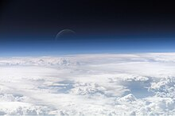

A planet is a large, rounded astronomical body that is generally required to be in orbit around a star, stellar remnant, or brown dwarf, and is not one itself.[1] The Solar System has eight planets by the most restrictive definition of the term: the terrestrial planets Mercury, Venus, Earth, and Mars, and the giant planets Jupiter, Saturn, Uranus, and Neptune. The best available theory of planet formation is the nebular hypothesis, which posits that an interstellar cloud collapses out of a nebula to create a young protostar orbited by a protoplanetary disk. Planets grow in this disk by the gradual accumulation of material driven by gravity, a process called accretion. The word planet comes from the Greek πλανήται (planḗtai) 'wanderers'. In antiquity, this word referred to the Sun, Moon, and five points of light visible to the naked eye that moved across the background of the stars—namely, Mercury, Venus, Mars, Jupiter, and Saturn. Planets have historically had religious associations: multiple cultures identified celestial bodies with gods, and these connections with mythology and folklore persist in the schemes for naming newly discovered Solar System bodies. Earth itself was recognized as a planet when heliocentrism supplanted geocentrism during the 16th and 17th centuries. With the development of the telescope, the meaning of planet broadened to include objects only visible with assistance: the moons of the planets beyond Earth; the ice giants Uranus and Neptune; Ceres and other bodies later recognized to be part of the asteroid belt; and Pluto, later found to be the largest member of the collection of icy bodies known as the Kuiper belt. The discovery of other large objects in the Kuiper belt, particularly Eris, spurred debate about how exactly to define a planet. In 2006, the International Astronomical Union (IAU) adopted a definition of a planet in the Solar System, placing the four terrestrial planets and the four giant planets in the planet category; Ceres, Pluto, and Eris are in the category of dwarf planet.[2][3][4] Many planetary scientists have nonetheless continued to apply the term planet more broadly, including dwarf planets as well as rounded satellites like the Moon.[5] Further advances in astronomy led to the discovery of over five thousand planets outside the Solar System, termed exoplanets. These often show unusual features that the Solar System planets do not show, such as hot Jupiters—giant planets that orbit close to their parent stars, like 51 Pegasi b—and extremely eccentric orbits, such as HD 20782 b. The discovery of brown dwarfs and planets larger than Jupiter also spurred debate on the definition, regarding where exactly to draw the line between a planet and a star. Multiple exoplanets have been found to orbit in the habitable zones of their stars (where liquid water can potentially exist on a planetary surface), but Earth remains the only planet known to support life.
